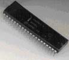
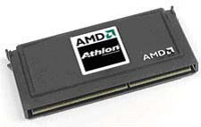
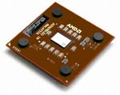
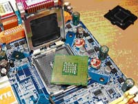

Обзор микропроцессоров: всегда ли полезна конкуренция?
Автор: orbЦелью данного обзора не является определение лучшего процессора или производителя, каждый рассмотренный процессор (мы рассмотрим далеко не все) внес новые технологии, переработанную систему команд, функции энергосбережения или другие новшества, которые отразились на последующих процессорах (или отразятся позже). Данная статья, скорее история развития микропроцессоров и усовершенствования основных характеристик, отличающих от аналогичных процессоров. Я пытался сохранить ход истории в правильном порядке, но некоторые даты могут не соответствовать действительности по ряду причин, например, анонсирование процессоров происходило в "горячке" с одним тестовым процессором на руках, а массовый выпуск данного процессора мог быть уже с усовершенствованным ядром месяцем позже (или через полгода). В этой статье рассмотрены процессоры 1-7 поколения, включая 32-разрядные современные процессоры. Следующее поколение процессоров 64-разрядные, будут рассмотрены в одной из следующих статей.
Начнем наш обзор с лидера и законодателя мод в мире процессоров - корпорации Intel, которая была основана в 1968 г. Первый процессор, разработанный специалистами этой корпорации, был i4040 в 1969 г. Он представлял собой 4-разрядное устройство с 2300 транзисторами (для примера: Pentium 4 имеет около 42 млн. транзисторов). Этот процессор применялся в карманных калькуляторах. В 1972 г. был выпущен 8-разрядный процессор i8008 с адресацией внешней памяти 16 Кбайт. Революцией можно считать 1974 г. – выпуск i8080. С этого момента начинается отсчет современных процессоров.

Этот процессор мог адресовать 64 Кбайта и работал на тактовой частоте 2 МГц. Он разошелся миллионными тиражами и заложил основу во всю дальнейшую архитектуру процессоров.
Первое поколение процессоров. Очередной революционный процессор Intel – i8086 – появился в 1978 г. Его основные характеристики – 16-разрядные регистры, 16-разрядная шина данных, сегментная адресация памяти 20 бит – это уже 1 Мбайт. Тактовая частота 4,77–10 МГц. Более дешевый вариант i8086 – это процессор i8088 – имеет 8 разрядную шину данных. Процессоры i8086/88 могли работать с внешним математическим сопроцессором i8087 (устанавливался в специальный разъем на плате). i8086 унаследовал большую часть множества команд 8080 и Z80. Все современные процессоры (в обязательном порядке) поддерживают набор команд процессора i8086, совместимость "снизу-вверх" - любую программу, написанную для i8086, можно запустить на Pentium 4 или Athlon XP.
Второе поколение процессоров. Память в 1 Мбайт – была довольно долго большим объемом, но со временем ее оказалось мало. Для доступа к большему объёму памяти нужно было устанавливать драйвера расширенной памяти EMS, с помощью которых через окошко 64 Кбайта можно было получить доступ к 32 Мбайтам. В 1982 г. Intel представляет 80286 (в конце 80-х в СССР такой компьютер стоил как две машины "Волга", если кому нужен сейчас, могу продать по дешевке :-) ) с расширенной шиной 24 бита (16 Мбайт памяти) и защищенным режимом работы. До этого в процессорах отсутствовала поддержка на процессорном уровне защиты программ от взаимного влияния, такое нововведение стимулировало производителей программного обеспечения на выпуск многозадачных операционных систем (Windows, OS/2).
Третье поколение процессоров. Действительно развитие многозадачности началось после выхода микропроцессора i80386 в 1985 г. Это первый 32-разрядный процессор, который положил начало семейству процессоров IA-32 (32-bit Intel Architecture). Главные отличительные особенности этого процессора: 32-разрядные шины адреса и данных (адресация 4 Гбайт); добавление 32-разрядных регистров; введен новый режим работы процессора – виртуальный 8086 процессор; страничная адресация памяти (стало возможно организовать виртуальную память). Введена концепция параллельного функционирования внутренних устройств процессора: шинный интерфейс, блок предварительной выборки, блок декодирования команд, исполнительный блок, блок сегментации, блок страничной адресации.
Четвертое поколение процессоров. Концепция параллельного функционирования внутренних устройств нашла свое дальнейшее развитие в процессоре i80486 (1989 г., модели SX, SX2, DX, DX2, DX4) в виде конвейеризации вычислений (5 ступеней). Основные отличия: наличие встроенного математического сопроцессора (модели DX, DX2, DX4); поддержка многопроцессорного режима работы; два вида кэш-памяти – внутренней 8 Кбайт (L1) и внешней (L2). Начиная с процессора i80486, все последующие модели процессоров Intel поддерживают различные концепции энергосбережения. Интересно, что совершенствование i80486 шло в ходе его промышленного выпуска. Вследствие этого по своим возможностям следующие по времени выпуска процессоры i80486 отличались от предыдущих.
Пятое поколение процессоров. Первый Pentium 60 (66), знаменитый своей ошибкой блока с плавающей точкой, был представлен в начале 1993 г. К внутреннему кэшу команд добавили 8 Кбайт для данных. Разработана суперскалярная архитектура (с двумя конвейерами u и v) – выполнение двух команд за один такт. Реализована технология предсказания переходов (branch prediction). Внутренние шины стали 128 и 256 бит, внешняя шина данных 64 бит.
Шестое поколение процессоров. Линейку процессоров Pentium 75-200 МГц можно охарактеризовать по следующим особенностям: кэш L1 16 Кбайт на кристалле процессора; кэш L2 256/512 Кбайт внешний на материнской плате; технология изготовления 0,35 микрон (для процессоров 120 МГц и ниже 0,6 микрон); содержит около 3,3 миллиона транзисторов.
В это время помимо Intel, можно отметить еще двух производителей процессоров это Cyrix и AMD, которые совместно с IBM разрабатывают стандарт "Р-рейтинг" для обозначения производительности процессора. "Р-рейтинг" любого процессора равен величине тактовой частоты процессора Intel Pentium, показавший такой же или более высокий результат в абсолютно идентичной конфигурации (замеры производились при на тесте Winstone 96). Конечно, кроме рейтинга, эти две корпорации выпустили еще и процессоры, которые по соотношению цена/возможности превосходили процессоры Intel.
AMD выпускает процессор К5-PR133 (реально работающий на частоте 116,7 МГц). Этот процессор имеет встроенный кэш 24 Кбайт, технология изготовления 0,35 микрон, около 4,3 миллионов транзисторов. Процессоры CYRIX (и идентичные им с лейблом IBM) имеют официальные названия 6х86 Р120+, 6х86 Р133+, 6х86 Р150+, 6х86 Р166+, 6х86 Р200+. Откуда "+"? Дело в том, что при выполнении 32-разрядных тестов процессоры К5 и 6х86 показывают примерно на 11% большую производительность на соответствующем процессоре Pentium. Особенности 6х86: кэш 16 Кбайт, дополнительный кэш для команд 256 б; технология изготовления 0,5 микрон (0,65 для Р120+); количество транзисторов около 3 млн.
Седьмое поколение процессоров. В конце 1995 г. Intel выпускает Pentium Pro, который до начала 1997 г. остается самым мощным (быстрее 8088 в несколько тысяч раз) и дорогим процессором. С этого процессора начинается архитектура Р6. Он выпускался с тактовыми частотами 150-200 МГц, имеет встроенный кэш первого уровня 16 Кбайт, второго 256/512 Кб (на кристалле процессора), технология изготовления 0,35 микрон, внутренняя шина 300 бит, около 5,5 млн. транзисторов. Высокая стоимость самого процессора и системной платы под него, высокое энергопотребление, а также заметный прирост производительности только под 32-разрядними операционными системами (Windows NT, OS/2) делают нецелесообразным использование Pentium Pro в компьютерах массового спроса, он находит свое применение в серверах и рабочих станциях.
Начиная с модели Pentium 133, был введен блок ММХ-команд (MultiMedia eXtensions). Цель данного блока увеличить производительность приложений по обработке звука, изображений, архивирования и др. Работа по обработке изображений на процессорах с ММХ выполнялась на 50% быстрее (если приложение не оптимизировано под ММХ, то на 7-11%). Кроме блока ММХ-команд, изменился еще и размер кэш-памяти до 32 Кбайт. Процессоры Pentium ММХ выпускались с рабочими частотами 133-233 МГц.
1997 г. - процессоры Pentium ММХ снимаются с производства, а в качестве альтернативы Intel выпускает Pentium II и Celeron. Если считать Pentium ММХ – обычным Pentium + ММХ, Pentium II – это усовершенствованный Pentium Pro с поддержкой ММХ. В этом процессоре удвоен объем кэш-памяти 16 Кбайт – для данных, 16 Кбайт – для команд. Кэш второго уровня выполнен не на кристалле (с целью удешевить процессор) и не на материнской плате (заметное снижение быстродействия). Был разработан новый разъем для процессора Slot 1 и сам процессор теперь представлял собой не отдельную микросхему, а картридж, внутри которого находился процессор и кэш второго уровня 512 Кбайт. При этом частота работы кэш-памяти второго уровня была в 2 раза ниже частоты процессора. Частота системной шины первых Pentium II была 66 МГц, а сами процессоры при этом работали на частотах 233-333 МГц. Позже Intel выпускает модификации Pentium II для частоты системной шины 100 МГц (модельный ряд 350, 400 МГц).
На рынок серверов выходят процессоры Xeon, отличающиеся от Pentium II размером кэша второго уровня 512/1024/2048 Кбайт (соответственно и ценой), разъем Slot 2. Он также обеспечивал поддержку многопроцессорности (до 8 процессоров, работающих одновременно).
Для дешевых настольных компьютеров выходит модификация Pentium II под названием Celeron (кодовое название ядра Covington). Первые два процессора Celeron 266 и 300 МГц отличались от Pentium II отсутствием внешнего контейнера и кэша второго уровня. Последующая модель выходит с индексом "А", что говорит о наличии кэша второго уровня 128 Кбайт, в исполнении Slot 1. Что бы еще больше удешевить Celeron, корпорация Intel выпускает линейку процессоров, начиная от Celeron 300А заканчивая Celeron 500 (все содержат кэш второго уровня). На рынке присутствуют 2 идентичных набора процессоров, отличающиеся только разъемом Slot 1 (картридж) и Socket 370 (микросхема с 370 ножками). Еще маленькая деталь из жизни Celeron-ов, они работают на частоте системной шины 66 МГц. Celeron 300А можно использовать на частоте 100 МГц (небольшой разгон, собственно это Pentium II только с урезанной памятью), при таком изменении он "превращается" в Celeron 450А и работает (в некоторых приложениях) быстрее Pentium II 450, !!! т. к. кэш второго уровня, хоть и обрезанный, но работает на частоте ядра процессора (у Pentium II в 2 раза ниже).
Один из соперников Pentium II был процессор Cyrix 6x86Mx (M2). Это переработанный 6x86, с улучшенной архитектурой (на 150-200% быстрее простого 6х86 той же частоты), также были добавлены некоторые команды к ММХ, дающие в итоге большой выигрыш в скорости (если приложение оптимизировано под эти процессоры!), например, множественное накопление (используется в 3D графике) выполнялось за два такта, вместо 3 - у Intel. Первые версии работали на частотах 180, 200 МГц, потом добавились 225 и 233МГц (225 работал быстрее 233!!!, т.к. использовал системную шину 75 МГц). Процессор имел встроенный кэш первого уровня 64 Кб (более рационально использовался), технология 0,25 микрон.
Корпорация AMD выпускает процессор К6, который не может похвастаться более высокой производительностью, но значительно дешевле процессоров от Intel, к тому же остался на старом разъеме Socket 7 (у Intel уже есть Socket 7, Socket 370, Slot 1, Slot 2). Размер кэш первого уровня 32 Кб данные, 32 Кб команды, технология 0,35, тактовая частота 166-233. К6 позиционируется как прямой конкурент Celeron. Соперник Pentium II в борьбе за покупателя был К6-2 (К6-3D), который содержит ряд команд для оптимизации работы с трехмерной графикой и звуком (3DNow!, оптимизация была включена в DirectX6, после успеха игры Quake2, разработчики видеокарт оптимизировали свои продукты под 3DNow!), устанавливается в Socket 7. Рабочие частоты 266-475 МГц.
В конце февраля 1999 г. были анонсированы Pentium III 450 и 500 МГц. Изготовлены по технологическому процессу 0,25 мкм, ядро Katmai, добавлен набор инструкций SSE, размер L1 кэш – 32 Кб (16+16), L2 кэш – 512 Кб (работает на половине частоты ядра, расположен рядом с микросхемой процессора в картридже), многопроцессорность (2 процессора на одной шине), идентификационный 96-битный номер – уникальный для каждого процессора (это вроде как преимущество, в криптографии и генерации случайных чисел, с другой стороны, о конфиденциальности можно забыть ;-) ). Фактически запуск этих двух процессоров выглядел, скорее, как маркетинговый прием Intel в борьбе с активно продвигающимся AMD К6-2.
В первой половине 1999 г. AMD начала поставки процессоров K6-III (К6-3D+), работающих в Socket 7. Главная особенность – встроенная кэш-память второго уровня 256 Кб (L1 кэш остался 64 Кб, что вдвое больше, чем Pentium III), работающая на полной частоте ядра (Pentium III – на половине частоты ядра), а кэш-память, установленная на материнской плате, рассматривается как кэш третьего (!!!) уровня. Тактовые частоты 400-500 МГц.
Долго оставаться в Socket 7 процессоры от AMD не могли (AMD выжала Socket 7 на все 200% :-) ). 23 июня 1999 г. лидерство в выпуске новых мощных процессоров перешло от Intel к AMD (хотя очень не надолго) – были представлены модели AMD Athlon 500, 550, 600, изготовленные по 0,25 микронной технологии в новом корпусе Slot А (чуть более тонкий картридж по сравнению с Slot 1).

После этого AMD выпустила еще несколько процессоров с более высокой частотой. 29 ноября 1999 г. были выпущены процессоры Athlon с частотами от 550-800 МГц, изготовленные по технологии 0,18 мкм (что бы отличать они именовались Model 1 - 0,25мкм и Model 2 - 0,18 мкм). Основные характеристики: внутренняя архитектура – типа "RISC"; имеет 3 конвейера для целочисленных вычислений и 3 для операций с плавающей точкой; добавлены новые команды в блок 3DNow!, теперь носит название Enhanced 3DNow!; L1 кэш – 128 Кб (64+64), L2 кэш – 512 Кб (в перспективе до 8 Мб) расположен в отдельных микросхемах рядом с процессором и работает на половине частоты ядра, поддерживает ECC-механизм; многопроцессорность – теоретически до 14 процессоров на одной шине; системная шина – 100 МГц, но работает по обоим фронтам сигнала, результирующая 200 МГц.
"Настоящий" процессор Pentium III (ядро Coppermine). Intel 25 октября 1999 г. анонсировала сразу 9 (!) процессоров с частотами 500-733 (с индексами E, EB). В последствии к ним добавились еще Pentium III 750, 800, 800EB, 900 МГц и 1,14 ГГц. Характеристики новой линейки процессоров: выполнен в Slot 1 или Socket 370 (FC-PGA) технология 0,18 мкм; 28 млн. транзисторов; L1 кэш – 32 Кб (16+16), L2 кэш – 256 Кб (L2 – работает на частоте ядра и располагается на кристалле процессора), поддерживает ECC-механизм обнаружения и коррекции ошибок при обмене данными с ядром процессора; частота системной шины 100 или 133 МГц, поддерживает ECC.
Новое поколение Celeron (на ядре Coppermine) отличается от своего более дорогого собрата, Pentium III, урезанным L2 кэш – 128 Кб. Этот процессор также поддерживает ММХ и SSE (нет поддержки 3DNow!). От более ранних версий Celeron отличается 256-битной внутренней шиной (между кэшем и ядром). Помимо этого избавились от злосчастного серийного номера (образованную общественность насторожила способность отслеживания действий пользователя). Технология изготовления 0,18 мкм (тут пришлось использовать другой разъем Socket 370 FC-PGA (отличается от Socket 370, разводкой пары ножек, напряжением питания и более жестким требованиям к питанию процессора).
Технология 0,18 мкм с архитектурой Р6 исчерпала себя полностью, поэтому для дальнейшего повышения частоты Pentium III, перешел на новые технологии 0,13 мкм. Новое ядро получило название Tualatin, в свет вышли новые модели Pentium III 1,13 и 1,2 ГГц (позже 1.3, 1.4, 1.5 ГГц). С выходом Tualatin, Intel, наконец, смогла осуществить свою давнюю мечту 512 Кб кэша на одном кристалле процессора и работающий на полной частоте процессора. Идя навстречу пользователей, Intel, удалил 96-битный идентификатор процессора. На ядре Tualatin, были выпущены также более легкие процессоры Celeron, мобильный вариант ядра Tualatin-М, серверный – Tualatin-S. В гонке за покупателем проект ядра Tualatin (так и не исчерпав своих ресурсов) был закрыт, корпорация Intel вместе с ним закрывает историю архитектуры Р6.
Переход на технологию 0,18 мкм для AMD состоялся летом 2000 г. разработкой ядра Thunderbird. Для своих новых процессоров Athlon AMD разрабатывает также новый разъем Socket А (Socket 462 в виде микросхемы). Под "капотом" нового процессора содержится 37 млн. транзисторов. L1 кэш – 128 Кб, L2 кэш – 256 Кб (L2 находится на кристалле процессора). Единственное "узкое" место (во всех смыслах этого слова) – 64-битная шина между ядром и кэшем второго уровня (Pentium III имеет 256 бит). Первые процессоры работали на шине 200 МГц (2х100), последующие модели перешли на 266 МГц (2х133). Набор команд x86, MMX, Enhanced 3DNow!
Июнь 2000 г. положил начало новому витку противостояния AMD и Intel, в этот раз – на рынке недорогих систем. Был выпущен процессор Duron 600, 650, 700 (позже 1.1 ГГц) на ядре Spitfire (переработанное ядро Thunderbird). Этот процессор содержит кэш-память обоих уровней на кристалле процессора L1 кэш – 128 Кб, L2 кэш – 64 Кб. Частота внешней шины 200 МГц (2х100), имеются 3 конвейера для операций с плавающей точкой.
2000 г. – на рынке появляется первый серийный процессор, от VIA получивший официальное название "C3". Технология производства 0,18 мкм. Количество транзисторов 11,2 млн. Разрядность 32 бит. Набор команд x86, MMX, 3DNow! Кэш-память первого уровня 128 Кбайт, кэш-память второго уровня отсутствует. Тактовая частота 500–667 МГц, частота шины 100–133 МГц. Разъём Socket 370. Выделяемая мощность 8–13 Вт. Преимущество процессоров C3 - малые потребляемая мощность и выделение тепла. Это позволяет использовать C3 без активного охлаждения (просто с радиатором).
Следующий процессор VIA Cyrix IIIa, Matthew (ядро Samuel II). Технология производства 0,15 мкм. Кэш-память первого уровня 128 Кбайт, кэш-память второго уровня 64 Кбайт. Тактовая частота 600–800 МГц, частота шины 100–133 МГц, разъём Socket 370. Выделяемая мощность 5 Вт!!! (для сравнения некоторые модели AMD выделяют 74 Вт). Процессор устойчиво работает без системы охлаждения (даже без радиатора), нагреваясь при длительной загрузке до 50 °C и очень быстро остывая при возвращении в режим холостого хода.
В конце ноября 2000 г. Intel представляет процессор Pentium 4 (кодовое название Willamette), архитектура NetBurst которого коренным образом отличается от своей предшественницы Р6. Основным отличием было увеличение конвейера до 20 стадий, что позволило сильно нарастить частоту процессора, причем без перехода на новый технологический процесс. Тактовая частота первых экземпляров составила 1.4 и 1.5 ГГц. Менее дорогая модель 1.3 ГГц появилась в начале 2001 г. Дальше один за другим следовали анонсы более быстрых процессоров. Интересный факт – арифметико-логическое устройство данных процессоров работает на частоте в два раза превышающей (!!!) частоту ядра! В новом процессоре также обновился блок инструкций SSE, дополнился еще 144 инструкциями и стал именоваться SSE2. Претерпел изменений и кэш первого уровня, его объем сократился до 8 Кб для данных, для хранения инструкций появился новый переработанный кэш (Trace Cache). Изменился также разъем процессора FC-PGA 423. Работая на таких частотах, процессору нужно принимать больший объем данных с обычной памяти, разработчики позаботились и об этом, создав Quad Pumped шину, работающую на частоте 400 МГц (реально она работает на 100 МГц, просто за один такт передается в 4 раза больший объем информации). Хоть Willamette и был значительным шагом в мире процессоров, но популярностью не пользовался.
До появления ядра Palomino процессоры Athlon не разделялись на семейства. А все потому, что все они были нацелены на один сегмент рынка - высокопроизводительные персональные компьютеры. Не было платформ для других категорий компьютеров, не было поддержки специальных технологий (хотя многопроцессорность неофициально была), да и рынок с недоверием относился к новому процессору, выпущенному "вечно второй" компанией. Ядро Palomino впервые для AMD будет использоваться в трех разных линейках процессоров: Athlon-4 - мобильные процессоры для ноутбуков, Athlon MP - процессоры для серверов и рабочих станций, долгожданный Athlon XP - "настольный" процессор для обычных компьютеров.
Система кэширования ядра Palomino значительно улучшена. Увеличен буфер трансляции адресов кэша (TLB) – в нем теперь больше записей, чем было раньше. Объем и структура кэшей остались неизменными: 64 Кб кэша данных, 64 Кб кэша инструкций (кэш первого уровня), 256 Кб кэша второго уровня, данные в кэшах не пересекаются. В ядре Athlon-4 появился блок аппаратной предвыборки данных. Изменения коснулись SIMD-инструкций 3DNow! Третья версия этих инструкций называется "3DNow! Professional", для управления потреблением энергии процессор Athlon-4 реализует технологию PowerNow! В ядре Athlon-4 наконец-то появился встроенный термодиод.
Не останавливаясь на достигнутом (и с переходом Athlon-ов на новое ядро), AMD, выпускает процессор Duron 1 и 1.1 ГГц (позже 1.2 ГГц), на новом ядре Morgan (переработанное Palomino). Кроме смены названия ядра, новый процессор имеет поддержку усовершенствованного набора инструкций 3DNow! Professional, а также инструкций SSE. Ядро Morgan имеет механизм предсказания переходов (процессор пытается предсказать, какие данные ему могут потребоваться) и буфер преобразование адреса (кэширование адресов памяти). В ядро вмонтирован температурный датчик.
С выходом 0.13 мкм Pentium 4 Northwood, разрешилась проблема с тепловыделением. Компактные размеры нового процессора FC-PGA 478 (сравним с 80386). Также возрос размер кэша второго уровня до 512 Кб (L1 кэш – 8 Кб), trace cache 12Kmops (кэш команд), сбрасываемая длина конвейера 20, расширение набора инструкций SSE2.
В начале лета 2002 года были объявлены более совершенные Athlon XP 2100+ и 2200+ на 0,13-микронном ядре Thoroughbred (TBred). Мало отличается от Palomino только технологией 0,13 мкм.

В конце лета последовал "бумажный" (первое время их было сложно достать) выход процессоров Athlon XP 2400+ и 2600+ (последних в истории моделей для системной шины 266 МГц) - как своеобразный ответ на начало продаж процессоров Intel Pentium 4 2,6-2,8 ГГц. А 1 октября AMD объявила и об Athlon XP 2700+ и 2800+ на новой системной шине 333 МГц.
Осенью 2002 года увидел свет очередной процессор от Intel, тактовая частота которого достигла значения 3 ГГц. Это - первый настольный процессор, обладающий поддержкой HyperThreading. На самом деле технология HyperThreading не так уж и нова. Ее поддержка была заложена в самые первые процессоры семейства Pentium 4 (те самые, с ядром Willamette). В смежном рынке серверов и рабочих станций, на процессорах Xeon она была включена раньше, более года назад. Однако на настольном рынке ее появление было задержано. И только после объявления Pentium 4 3.06 было решено, что в обновленной линейке процессоров, как младших, так и старших, еще не вышедших, HyperThreading будет поддерживаться в обязательном порядке.
Изначально планировался выпуск процессоров на ядре C5X, оснащённых кэш-памятью второго уровня 256 Кбайт. Однако, такая конфигурация увеличивала стоимость и потребляемую (и выделяемую в виде тепла) мощность. Поэтому, в массовое производство пошла в 2003 г. лишь "облегчённая" версия VIA C3 Nehemiah со стандартным для процессоров C3 объёмом кэша. Технология производства 0,13 мкм. Тактовая частота 1000–1400 МГц, выделяемая мощность 5–18 Вт. Ядро обеспечивает также криптографические функции и исполняет инструкции SSE, отказавшись от инструкций 3DNow!.
В 2003 г. пять новых процессоров Pentium4 с частотами 2.8-3.6 ГГц, а также Pentium4 3.4 ГГц XE (eXtreme Edition) выполненных для Socket Intel LGA775. Теперь вместо указания тактовой частоты, будет использоваться так называемый "процессорный номер" (2.8 ГГц-P4 520; 3.0 ГГц-P4 530; 3.2 ГГц-P4 540; 3.4 ГГц-P4 550; 3.6 ГГц-P4 560; 3.4 ГГц-P4 XE). На новых процессорах LGA775 ножки отсутствуют - вместо них контактные площадки.

10 февраля 2003 компания выпустила новые Athlon XP 3000+, 2800+ и 2500+ на ядре Barton с увеличенной вдвое кэш-памятью второго уровня (L2 – 512 Кб). Само вычислительное ядро процессора никаких существенных изменений не претерпело, то есть, по сути, мы имеем тот же самый Thoroughbred ревизии B с добавленной памятью. С новым объемом кэша, AMD пересчитывает рейтинг своих процессоров 3000+ на Barton – реально работает на частоте 2167 МГц и 2700+ Thoroughbred-B – реально работает на той же частоте 2167 МГц. Частота шины 333–400 МГц (dual-pumped).
2 февраля 2004 г. произошёл массовый анонс целого ряда процессоров. Были анонсированы Pentium4 2800E, 3000E, 3200E, и 3400E, а также новая версия Pentium4 Extreme Edition с частотой 3400 МГц (и кэшем третьего уровня 2 Мб) и ещё зачем-то Pentium 4 Northwood с частотой 3400 МГц. Был представлен также процессор Pentium4 2800A, процессор с ядром Prescott, но на пониженной частоте шины и без поддержки технологии Hyper-Threading. Процессоры имеют поддержку Hyper-Threading и работают на шине 800 МГц. Новые процессоры производятся с соблюдением норм 90-нанометрового технологического процесса. L1 кэш – 16 Кб, trace cache 12Kmops (кэш команд), L2 кэш – 1024 Кб, сбрасываемая длина конвейера 31, расширение набора инструкций SSE3. Дополнительные улучшения Prescott: улучшенная предвыборка данных; улучшенное предсказание ветвлений; дополнительные буферы комбинированной отложенной записи в память; ускорение некоторых операций с целыми числами, в том числе, умножение. По заявлениям Intel, технология HT претерпела заметные улучшения в новых процессорах. Первое - увеличение количества эксклюзивных ресурсов процессора для каждой нити. Другое улучшение состоит в увеличении размеров кэш-памяти всех уровней, которые призваны обеспечивать нити данными. Так что, в некоторых случаях прирост от использования HT может быть больше на Prescott, чем на аналогичном Northwood, именно по этой причине. Появились новые инструкции в технологии HT.
2004 г. – год выпуска AMD K7 Thorton (Athlon XP). Thorton - это скорее очередной Duron, экономичная модель Athlon XP на ядре Barton (искусственно отключена половина L2-кэша 256 Кбайт). Использование слова "Athlon" позволяет позиционировать Thorton как более производительную микросхему по сравнению с предыдущими Duron. Технология производства 0,13 мкм. Тактовая частота 1667–2133 МГц (2000+…2400+), частота шины 266 МГц (dual-pumped).
Представление Sempron, которое должно было иметь место в середине августа, перенесено на 28 июля 2004 г. (выпуск 17 августа). Sempron 3100+ для Socket 754 ядро Paris, Sempron 2500+ (1750 МГц), 2600+ (1833 МГц), 2800+ (2000 МГц) для Socket A, ядро Barton. Модели Sempron под Socket A просуществуют до конца 2005 года, но в малобюджетных системах. Самым последним процессором Sempron под Socket A будет модель 2800+. Эти процессоры позиционируются, как конкуренты Intel Celeron D. Sempron под процессорный разъем Socket A по техническим характеристикам – практически Thoroughbred с 1,6 В напряжением, единственное отличие – частота шины, увеличенная до 333 МГц. Модели AMD Sempron processors 3100+, 2800+, 2600+, 2500+, 2400+, 2300+ и 2200+ доступны в настоящее время, модели Mobile AMD Sempron 2600+, 2800+, 3000+ для "полноразмерных" ноутбуков и Mobile AMD Sempron 2600+ и 2800+ для субноутбуков будут доступны в августе 2004 года.
На данный момент (2004 г.) Intel представила процессор Pentium 4 (ядро Tejas) на разъёме Socket T, изготовленного по технологии 0,09 мкм. Способным работать на тактовых частотах 3600-5000 МГц, шина 800 МГц. L1 кэш – 24 Кб, L2 кэш – 1024 Кб. Набор команд x86, MMX, SSE, SSE2. Для любителей цифр, можно сравнить процессоры по таблицам для INTEL, для AMD, все остальные.
Можно прийти к выводу: конкуренция это – хорошо, но в меру. Соревнование AMD против Intel, несет для пользователя много плюсов: снижение цены; снятие маркетинговых ограничений (Celeron перевели на 100 МГц); выпуск процессоров разных возможностей, оптимизированных под разные потребности. Но такое соперничество имеет и обратную сторону: много ядер, на разработку которых ушло не мало сил, просто "пролетают" мимо рынка, в недоработанном виде, пока шла доработка, вышло новое ядро, а проект старого просто закрыли; выпуск процессоров на новом разъеме, который имеет, "некоторые" недостатки и через несколько месяцев заменяется на другой, несовместимы с первым, а покупателю, купившему передовую машину, уже не получится заменить процессор на более современную модель. Часто корпорации вместо того, что бы совершенствовать текущее ядро, берется за разработку принципиально новой архитектуры. Много процессоров (возможно даже лучших) было вытеснено, не выдержав конкуренции или не успев за "прогрессом" конкурента. И если Вы думаете, что от этой гонки страдаем только мы (покупатели) – то Вы сильно заблуждаетесь, для таких монстров компьютерной индустрии, как AMD и Intel эти потери выражаются в $$ (10, 100, 1000 миллионов $$), которые выбрасываются на обреченные проекты, или выпуск первых моделей процессоров, для привлечения покупателя на слова: " - А наш процессор работает уже на частоте 2 ГГц, тогда как у ... только 1.8 ГГц!!!". И с каждым годом (или уже правильнее сказать кварталом, месяцем) эта гонка набирает все большие и большие обороты ... Что нас ждет завтра???